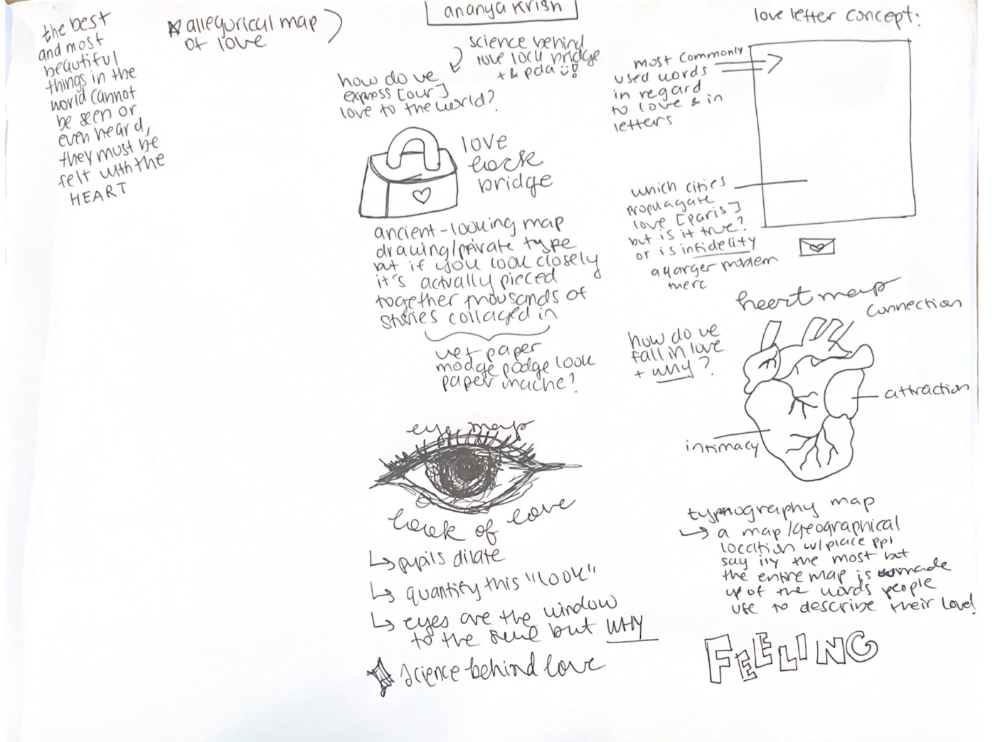

« the best and most beautiful things in the world cannot be seen or even touched - they must be felt with the heart »
an exploration of how we feel and interact with Love
Map 1: Exploring Love & Its Topographical Expressions
My mapping process began with a broad, overarching approach with one key question in mind: What is the relationship between people and place, and what analysis really derives from this connection? The mapping techniques I looked at for this map were cinematic cartography, and the “I was there” map. The cinematic cartographic approach utilizes cartography, and place to understand dynamics between characters, locations, and experiences in cinema. Whilst the “I was there” map was born out of the need to explore spatiality beyond the conventional mechanisms of longitude and latitude to place objects in space. I integrated these two methodologies to explore love through topographical expression. Using the famous television show, Normal People, which is based off the book of the same name by Sally Rooney tells the story of two individuals Marianne and Connell (who come from very different backgrounds) as they grow older but remain connected in their ambiguous relationship. Through the non-traditional techniques used in the “I was there” map, I explored both characters' dynamic relationship with themselves and each other. The “I was there” map is not topographically accurate, but it is designed that way because it is able to better represent the complex experiences of the individual, places were scaled in their relativity to one another, and the more times a place was mentioned the darker its opacity was. There is still a sequential element to the map, through its usage of numbering and arrows to lead the viewer from one place to another; it expresses testimonies through spatiality. I utilized similar mechanisms in my map, it is sequentially numbered with pointed arrows to lead the viewer from one main location to another with descriptions on how this place shaped the overall character arc. Multiple places are listed with each character having their own color (pulled from the color scheme used in the cinematic show), smaller locations like “Blackbird” or “Brother Hubbard” are in a lighter opacity as they are significant places to the storyline but not places were bigger crescendo moments occurred. I did add some more narrative pieces to this map, which the original does not; in certain locations (ex: Sweden, New York) there are character quotes that speak to their experiences. This was done for two reasons, one these are places only one character existed, so the quote helps to explain their character development in the location, and since in the show these locations do not have many additional smaller places, the character frequents the quote provides more depth to the overall story arc. One other thing I added to the map was the third-party analysis. Since I was combining two techniques of cinematic cartography, and relational stories I wanted to touch on the analysis portion of cinematic cartography which explores the socio-economic, or power structures that are told in film through space and place (can be seen in the map through the italicized non bolded text). Combining the two mapping techniques was successful; I felt I could deep dive into character arc and analysis since the story was fictional, allowing me to pursue, contemplate, and integrate different story angles and explorations. I believe it was successful because relational stories allow you to go beyond traditional cartographic technical restrictions and instead just better understand space and place, it's the perfect way to explore the spatiality of experience. My position with creating the map and the storytelling process was mixed, since my ‘data’ was based on a story that has already been written a lot of what is in my map is based on what occurred and its consequences. Yet, I had the power to choose what experiences, or places to highlight based on my analysis of what could be considered an impactful location. I also did an overarching analysis of interactions between characters', and space and what that meant for the understanding of the overall story; this was rooted in my own understanding of power relations and how I interpreted that to be expressed through place.
Map 2: Love Lock Bridges
For the Love Lock Bridge’s map my goal was to explore one of my story angles, which was the physical manifestation humans design to show their love. Love is often times described as an ephemeral feeling, but as the love language of gift giving has shown, humans often need and desire a physical object to represent or showcase the love that they feel. A great way this is seen is through love lock bridges, which stemmed from an ancient love story and has caused these bridges to pop up all around the world. The data utilized is the locations of some of the most prominent love lock bridges across the world, these data files were downloaded from OpenStreetMap and then uploaded onto ArcGIS to create a personalized story map to fit under the overall theme of multimedia mapping. Using the technique of personalized story maps, the map pans across the world and takes you to eleven of the most famous love lock bridges and reveals the interesting tidbits and stories that are unique to it. Specifically, the “pan and zoom” technique is used and as one scrolls the map will zoom in and jump around to different locations. Originally, the placement of all the locations was in geographical direction going from west to east but I ended up shifting it and reframing the narrative to begin at where the story behind the love lock bridge originated and how it travelled across the globe. I utilized continuity to bridge the differing locations into a logical storyline but many of the other locations are grouped together based off geographical proximity. The images are there to set a visual tone congruent with the overall upbeat, and optimistic nature of the bridges hence the bright color choices. The video is also placed before the map as both an explanatory element and a way to express voice to help the reader see firsthand the emotions individuals feel when placing the locks on these bridges. Finally, on the map redundancy signifies that while these love lock bridges represent this desire for eternal love, city councils often feel structural constraints. I believe the map was successful in some ways, I feel it covers the topic nicely and in an interesting way while using some of the techniques that were discussed in class. I feel the map does fall short in the ‘storytelling’ angle of it as it does not really have a hypnotizing beginning, climax, and end act; it is more of a factual piece that takes you through the feeling behind love in the human experience. I was not able to find a mythological or real love story for each location, so I went more in depth into facts about the way the bridge was designed, its inspiration, and the goal in mind and tried to really explore the techniques behind storytelling. I held the power in the creation of the map because I was able to choose what data points to talk about, I chose them by doing a lot of research on the most famous or frequently mentioned love lock bridges and I tried to add locations that hit many geographical locations and perhaps had some unique tidbits of their own. I also held the power within the storytelling process, and in the map, I had the choice of what facts or stories to cover, and the order in which these stories were told. My positionality could have also been impacted by the travel locations that people tend to go to the most, as many love lock bridges serve as tourist attractions a lot of the articles frequently mentioned the same places. I tried to use many different sources to pick the bridges (and the information) I would highlight by reading personal blogs and articles from varied sources/platforms.
Map 3: Mapping Borders & Emotional Stories
The third map was an exploration of emotional cartography, in which I used my own experiences (emotional data) inspired by the mapping borders map. In this map, I chose to explore the story angle of how feelings (love, anger, frustration) are tied and associated with specific areas and locations and how these may even ebb and flow with time. The data utilized was all from my own personal experiences in life and I first wrote out all those experiences, highlighting the ones most impactful to me, where this fit in a timeline, and if any of those feelings have even simmered down or shifted with time. I utilized the line symbolization technique to represent different feelings, anger is represented with short stubby lines which is a symbolization for frustration in my eyes, while love and ease was a straight fluid line, excitement was static, quick, and sharp as the feeling itself can often come in bouts. I also explored experiential labeling, but instead of writing them out I used images like an experiential caption to connect back to and as a visual reminder of an experience I personally felt. I struggled with the voice aspect and was unsure how to best encapsulate why things were done a certain way, but after reflecting I was able to understand that the ambiguity and line symbolism choices do tell the story – just in a different way; they express the ambiguity of experience and to some extent leave it open to individualized interpretation. The goal of this map is not for it to represent everyone’s experience, but more as a shrine of experience and a map to look back on to understand and reflect on how I felt at this moment in time. This map served more as a mechanism of self-exploration and self-expression rather than something left to be consumed and understood by all. In terms of technique, I think what worked best was the line symbolization and the use of simplicity to tell a story but I struggled with the sequencing and addition of multiple experiences and layers. Since I as the cartographer and primary data set, my experiences are unique to me and my relationship with the location of ‘New York’, adding other forms of data would not work in this setting since there is not an overarching experience that is shared to map (specifically, no one I directly know). In this case, the power was entirely in my hands and since the data set was all my own information I had the ability to decide how I wanted to frame my experiences and how best to share them. My positionality, and the feelings I experienced were shaped by numerous encounters and interactions and that is why this map is not so much educational as it is a informational on my personal feelings. This map cannot be viewed as something that everyone will feel or relate too, if anything many people will disagree. Thus, this map must be viewed as my personal interpretation of my experiences.
A look into some of the workflow behind the maps: 

.png)